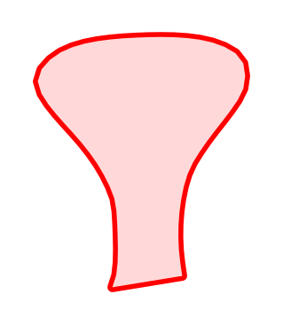
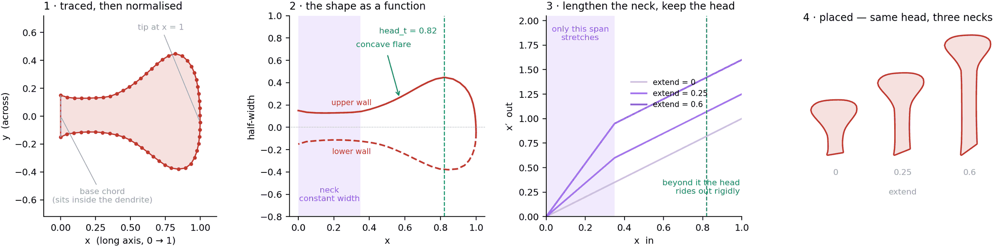
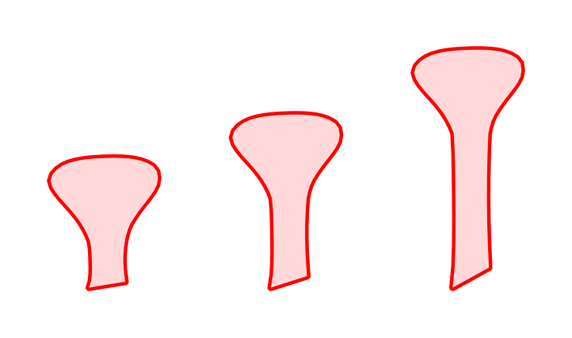
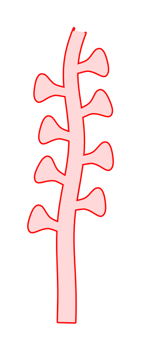
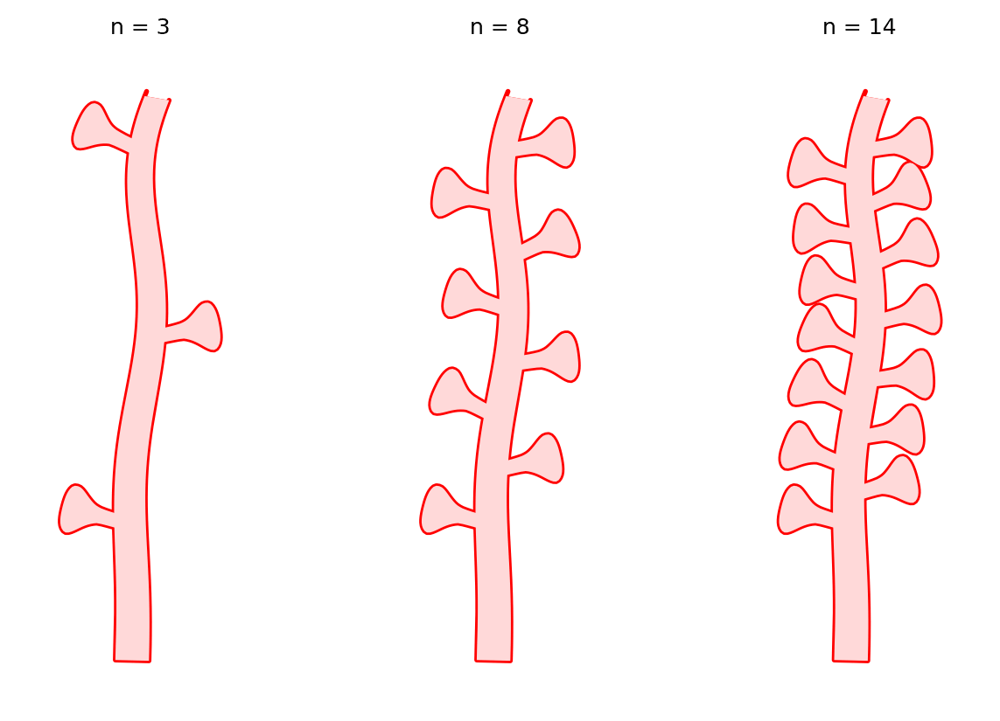
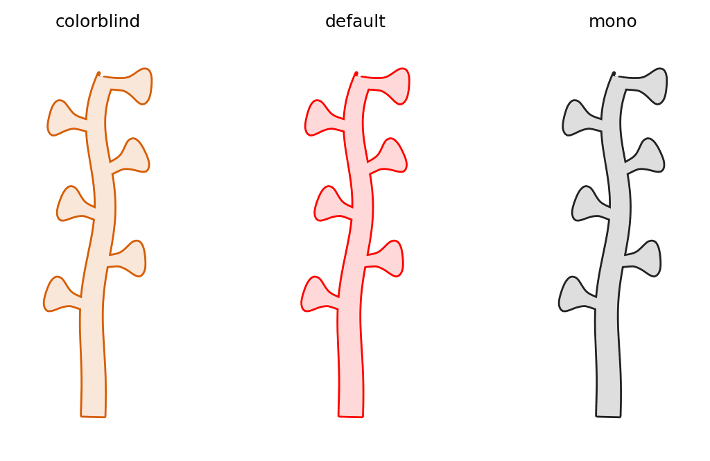

All examples Dendrites & spines
Dendritic spine
The shape biodraw grew out of, and the clearest example of why it traces rather than synthesises.
profile.get('spine')Branch

The blueprint

Every attempt to build this profile out of ellipses and smoothsteps read as a cone, a bead on a stick, or a leaf. What makes it a spine is a constant thin neck for the first third, then an accelerating concave flare into a blunt, slightly up-tilted head. Easier to draw by hand and trace than to guess — and once traced, it becomes maths you can place anywhere.
1 · Traced, then normalised. 56 vertices from a hand drawing, rotated onto their long axis and scaled so the shape spans x = 0 → 1. The base chord sits at the origin; when placed, it is sunk inside the dendrite wall so no stub shows.
2 · The shape as a function. The two walls plotted as half-width against x. The flat stretch on the left is the neck; the acceleration after it is the flare. The gentle upper/lower asymmetry is the original drawing's wobble, kept on purpose — it is what stops a branch of these reading as stamped clip art.
3 · Lengthening the neck. Scaling a spine up inflates its head, and on a densely spined dendrite the heads start touching. So extend stretches only the shaded span, and everything past it — the flare and the head, the whole recognisable part — rides out rigidly. The plot is that piecewise map.
4 · Placed. Same head, three neck lengths.
Drawing one
import biodraw as bd
from biodraw.core import profile, render
spine = profile.get("spine")
outline = spine.place(
base=(0, 0), # where it roots, on the host's centreline
direction=(0, 1), # which way it points
size=1.0, # length of the whole profile, in local units
)
fig, ax = bd.canvas(figsize=(1.8, 2.4))
render.render_hollow(
ax=ax,
parts=[outline],
fill="#FFD9D9", # the interior wash
edge="#FF0000", # the wall
wall_lw=2.0, # wall thickness, in points
gid="spine", # names the layer in the exported SVG
)
bd.fit(ax, [outline], pad=0.08)
bd.save(fig, "spine.svg")Turning the knobs

extend changes how far a spine stands off its branch, without resizing it:
outlines = [
spine.place(base=(i * 0.42, 0), direction=(0, 1), size=0.3, extend=e)
for i, e in enumerate((0.0, 0.10, 0.25))
]On a branch


A Branch stamps the profile along a curved centreline, alternating sides, and the tube plus every spine fuse into one unbroken outline — no seam where a spine meets the dendrite.
from biodraw.core.branch import Branch
branch = Branch(
origin=(0, 0),
direction=(0, 1),
length=1.8,
bend=0.10, # the slow lean; sign picks the side
)
branch.decorate(
profile="spine",
n=8, # how many
size=0.21, # each spine's length
extend=0.04, # ...plus this much extra neck
first_t=0.30, # leave the proximal shaft bare
last_t=0.86, # ...and stop short of the tip
)
dendrite_wall, open_tip = branch.parts(
width=0.11, # full tube width where it leaves the origin
taper=0.72, # width at the tip, as a multiple of that
base_ext=0.05, # bury the base inside whatever it grows from
)
fig, ax = bd.canvas(figsize=(2.8, 4.4))
render.render_hollow(
ax=ax,
parts=dendrite_wall, # closed outlines — the spines
open_parts=open_tip, # the tube, whose far end stops rather than caps
fill="#FFD9D9",
edge="#FF0000",
wall_lw=1.0,
gid="dendrite",
)
bd.fit(ax, dendrite_wall + open_tip, pad=0.12)first_t leaves the proximal shaft bare on purpose: that is where anything contacting the shaft has to land, and a shaft contact arriving next to a spine head reads as a spine contact — the wrong claim entirely.
Colour

palette = bd.style.palette.get("colorblind")
edge = palette["excitatory"]What comes out
bd.save writes vector — named layers, text kept as text, and byte-reproducible, so the same call tomorrow gives the same file. That is the deliverable: it drops into a figure beside real data, and stays editable in Illustrator.
The blueprint above is hand-drawn from the same Profile object that draws the spine. It is the prototype for bd.explain(), which will generate one for every shape in the library.
Every figure above is output, not a stored asset — the full script that draws them.